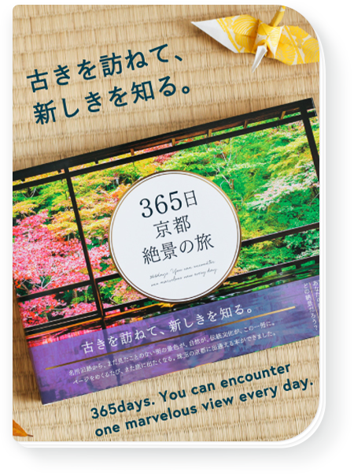

旅に出よう。
僕たちが作りたいのは
持っているだけで旅に出たくなるモノ。
持っているだけでわくわくするモノ。
それは新しい時代の “パスポート”
僕たちが作るものは、
そんな、存在でありたい。
そして、人と人が繋がる
こんな時代だからこそ、
僕たちは、みんなでひとつのモノを
作ることを追求したい。

それは、自分と世界を繋げる
旅のモノづくりブランド
PRODUCT
MORE
地球一周 365日 世界遺産絶景の旅

365日 京都 絶景の旅

365日 北海道 絶景日めくりカレンダー

365 北海道 絶景の旅

The World
Festival Guide - 海外の音楽フェス完全ガイド -

この世界で死ぬまでしたいこと2000
NEWS
MORE
2023年度夏の絶景ポストカード制作スタート!夏景色の写真を大募集!
2022.7.22
こんにちは、TABIPPOの小井詰です。 東急ハンズやLOFTにて販売されている、 旅好きな方とつくってきたPAS-POLの夏の絶景ポストカード2023夏制作をスタートしました。 2023年度も今年同様、四季に合わせて募集をしていきます。年間を通して募集をするので、 彩り豊かな四季折々の写真のご応募をお待ちしております。今回は夏の風景写真を募集いたします! 現在の予定では以下のスケジュールで募集を行い（変更の可能性あり）、夏以降募集の際にはまた、 改めてお知らせをいたします。 写真募集年 ...

【2023年度も制作決定】人気の絶景ポストカード「春」の写真を大募集!
2022.4.11
こんにちは、TABIPPOの小井詰です。 東急ハンズやLOFTにて販売されている、 旅好きな方とつくってきたPAS-POLの夏の絶景ポストカード2023夏制作をスタートしました。 2023年度も今年同様、四季に合わせて募集をしていきます。年間を通して募集をするので、 彩り豊かな四季折々の写真のご応募をお待ちしております。 今回は夏の風景写真を募集いたします！ 現在の予定では以下のスケジュールで募集を行い （変更の可能性あり）、夏以降募集の際にはまた、改めてお知らせをいたします。 写真募集年 ...

人気の絶景ポスト制作中!「クリスマス」の絶景写真を大募集します
2021.11.29
こんにちは、TABIPPOの小井詰です。 東急ハンズやLOFTにて販売されている、 旅好きな方とつくってきたPAS-POLの絶景ポストカードですが、 2021年より制作が再開いたしました。 photo by PAS-POL 今回の制作は、 四季に合わせて募集をしています。年間を通して募集をするので、 彩り豊かな四季折々の写真のご応募をお待ちしております。 第四弾は、クリスマスの風景写真を募集いたします！ 現在、春、夏と募集が終了し、 秋の絶景写真の募集を延長しております！そして最後の募集となるのが、冬の絶景 ...

【募集期間延長】人気の絶景ポストカード制作中! 日本の「秋」の絶景を大募集します！
2021.10.12
こんにちは、TABIPPOの中 美砂希です。 東急ハンズやLOFTにて販売されている、 旅好きな方とつくってきたPAS-POLの絶景ポストカードですが、 2021年より制作が再開いたしました。 photo by PAS-POL 今回の制作は、四季に合わせて募集をしています。 年間を通して募集をするので、彩り豊かな四季折々の写真のご応募をお待ちしております。 第三弾は、秋の風景写真を募集いたします！ 現在の予定では以下のスケジュールで募集を行い（変更の可能性あり）、 秋以降募集の際にはまた、改めてお知らせを ...

【セール情報あり】PAS-POLオンラインショップ閉店のお知らせ
2021.9.15
いつも、PAS-POLのサイトをご覧いただきありがとうございます。 突然ではございますが、この度2021年9月30日をもちまして、 PAS-POL公式オンラインショップを閉鎖する運びとなりました。 （※PAS-POLのブランドがなくなるわけではありません） 2015年の夏からスタートしたオンラインショップですが、 旅が好きな方、TABIPPOを知ってくださってる方、ライフスタイルにこだわりたい方、 などたくさんの方にPAS-POLの商品を公式ショップにて購入いただいたこと、 と ...
2023年度夏の絶景ポストカード制作スタート!夏景色の写真を大募集!
2022.7.22
こんにちは、TABIPPOの小井詰です。 東急ハンズやLOFTにて販売されている、 旅好きな方とつくってきたPAS-POLの夏の絶景ポストカード2023夏制作をスタートしました。 2023年度も今年同様、四季に合わせて募集をしていきます。年間を通して募集をするので、 彩り豊かな四季折々の写真のご応募をお待ちしております。今回は夏の風景写真を募集いたします! 現在の予定では以下のスケジュールで募集を行い（変更の可能性あり）、夏以降募集の際にはまた、 改めてお知らせをいたします。 写真募集年 ...

【募集期間延長】人気の絶景ポストカード制作中! 日本の「夏」の絶景を大募集します!
2021.7.5
こんにちは、TABIPPOの中 美砂希です。 東急ハンズやLOFTにて販売されている、 旅好きな方とつくってきたPAS-POLの絶景ポストカードですが、 制作が再開しましたのでお知らせいたします。 photo by PAS-POL 今回の制作は、四季に合わせて募集をしています。 年間を通して募集をするので、彩り豊かな四季折々の写真のご応募をお待ちしております。 第二弾は、夏の風景写真を募集いたします！ 現在の予定では以下のスケジュールで募集を行い（変更の可能性あり）、 夏以降募集の際にはまた、改めてお知ら ...